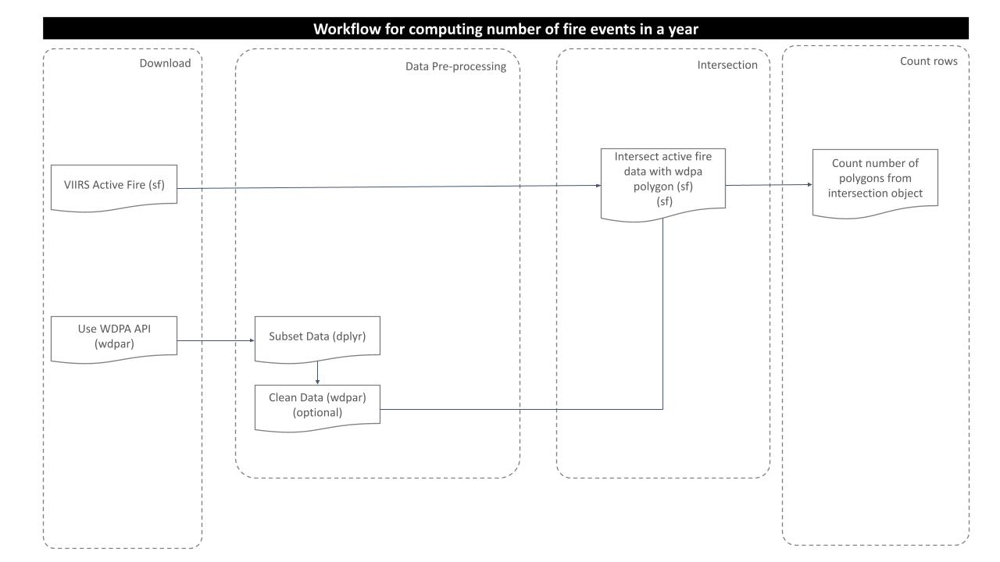
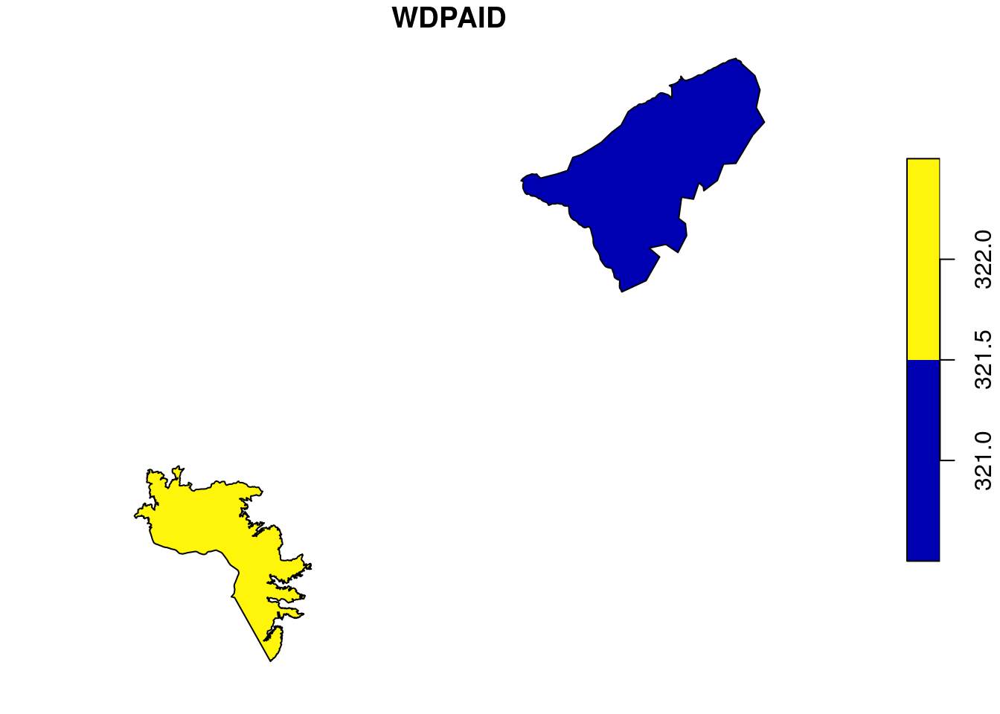
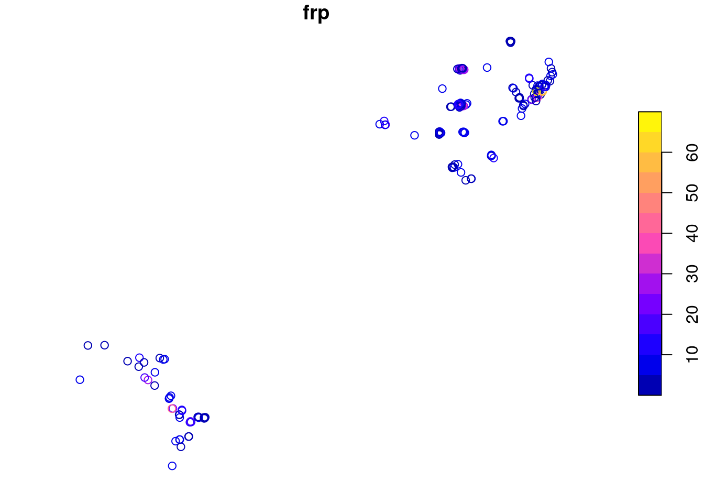

Last updated: 2021-11-15
Checks: 6 1
Knit directory: mapme.protectedareas/
This reproducible R Markdown analysis was created with workflowr (version 1.6.2). The Checks tab describes the reproducibility checks that were applied when the results were created. The Past versions tab lists the development history.
The R Markdown is untracked by Git. To know which version of the R Markdown file created these results, you’ll want to first commit it to the Git repo. If you’re still working on the analysis, you can ignore this warning. When you’re finished, you can run wflow_publish to commit the R Markdown file and build the HTML.
Great job! The global environment was empty. Objects defined in the global environment can affect the analysis in your R Markdown file in unknown ways. For reproduciblity it’s best to always run the code in an empty environment.
The command set.seed(20210305) was run prior to running the code in the R Markdown file. Setting a seed ensures that any results that rely on randomness, e.g. subsampling or permutations, are reproducible.
Great job! Recording the operating system, R version, and package versions is critical for reproducibility.
Nice! There were no cached chunks for this analysis, so you can be confident that you successfully produced the results during this run.
Great job! Using relative paths to the files within your workflowr project makes it easier to run your code on other machines.
Great! You are using Git for version control. Tracking code development and connecting the code version to the results is critical for reproducibility.
The results in this page were generated with repository version 775f89f. See the Past versions tab to see a history of the changes made to the R Markdown and HTML files.
Note that you need to be careful to ensure that all relevant files for the analysis have been committed to Git prior to generating the results (you can use wflow_publish or wflow_git_commit). workflowr only checks the R Markdown file, but you know if there are other scripts or data files that it depends on. Below is the status of the Git repository when the results were generated:
Ignored files:
Ignored: .Rproj.user/
Untracked files:
Untracked: analysis/fire_event.Rmd
Unstaged changes:
Modified: code/big_data_processing.R
Modified: code/development/download-scripts.R
Note that any generated files, e.g. HTML, png, CSS, etc., are not included in this status report because it is ok for generated content to have uncommitted changes.
There are no past versions. Publish this analysis with wflow_publish() to start tracking its development.
# load required libraries
library("sf")
library("wdpar")
library("tidyverse")
starttime <- Sys.time() # mark the start time of this routine to calculate processing time at the endForest fire (wildfire, bushfire) is any fire caused due to unfortunate events or in some cases due to anthropogenic disturbances. By any means, forest fire is the major concern for the authorities responsible for the conservation of forest ecosystem and its elements. Thus it is important to account the number of fire events occured in a particular region of interest, in our case, say protected areas. With the information on how many fire events did occur in the past few years, the researchers will get an idea of increasing/decreasing trend and thus act accordingly to preserve it from future fire disasters. VIIRS provides free and open source datasets on active fire events from year 2012 to 2020 with other variables such as brightness, fire radiative power, date/time, lat/lon and day/night information. In this analysis section, we are going to take sample protected areas and compute the number of occurences of fire events in that particular region of interest for a particular year.
To carry out this analysis, we will follow this processing routine:

For this analysis, we would try to get the country level polygon data from wdpar package. wdpar is a library to interface to the World Database on Protected Areas (WDPA). The library is used to monitor the performance of existing PAs and determine priority areas for the establishment of new PAs. We will use Venezuela - for other countries of your choice, simply provide the country name or the ISO name e.g. BRA for Brazil, Gy for Guyana, COL for Colombia.
# fetch the raw data from wdpar of country
vn_wdpa_raw <-
wdpar::wdpa_fetch("VEN")Since there are 290 enlisted protected areas in Venezuela (as of time of writing), we want to compute zonal statistics only for the polygon data of: - Sierra Nevada - wdpaid 321, and - Páramos de Tamá, Cobre y Judio - wdpaid 322
For this, we have to subset the country level polygon data to the pa level.
# subset required wdpa polygons by their wdpa ids
vn_wdpa_subset <-
vn_wdpa_raw%>%
filter(WDPAID %in% c(321, 322))Now, we will reproject the polygon data to the WGS84 and plot the polygon to visualize.
# reproject to the WGS84
vn_wdpa_subset <- st_transform(vn_wdpa_subset,
"+proj=longlat +datum=WGS84 +no_defs")
# we can plot the data to see the selected WDPA polygons
plot(vn_wdpa_subset[1])
We have downloaded the CSV files from the VIIRS website for the individual countries of interest from LA for the years 2012 to 2020. Later we processed those CSVs which have coordinates in lat/lon to polygon files for particular year. In this analysis, we can thus directly load the fire event polygon and transfrom it to match coordinate system with the WDPA polygon.
# load active fire event data for 2020
fire <-
read_sf("../../datalake/mapme.protectedareas/input/fire_event/fire_2020_subset.gpkg")
# transform to WGS84
fire <- st_transform(fire,
"+proj=longlat +datum=WGS84 +no_defs")After preparing fire event data and WDPA polygon, we should now intersect the layers to crop out the desired extent from the fire data. Since we already transformed the coordinate system of both the polygons to WGS84, we will now use function st_intersection from package sf to get the intersected portion of the fire data.
# apply intersection
fire_subset <- st_intersection(fire,
vn_wdpa_subset)
# plot fire data
plot(fire_subset[1])
Now, we get the intersected portion of the fire data, we can simply count the number of rows from the intersected data in order to get the count of number of fire events within the selected polygon.
# compute number of occurences of the events
n <-
table(fire_subset$WDPAID)
# store the result in a data frame
df <- data.frame(WDPAID = vn_wdpa_subset$WDPAID,
fire_events_count_2020 = c(n[[1]], n[[2]]))
# view the result data frame
df WDPAID fire_events_count_2020
1 321 136
2 322 42From the result above, we can see that there were 136 fire events in WDPAID 321 and similarly 42 fire events in WDPAID 322 for the year 2020. In this way, we can compute the occurences of fire events in our polygon of interest for the particular years between 2012 and 2020.
In the end we are going to have a look how long the rendering of this file took so that we could get an idea about the processing speed of this routine.
stoptime <- Sys.time()
print(starttime-stoptime)Time difference of -7.971832 mins[1] VIIRS I-Band 375 m Active Fire Data | Earthdata. (2021, July 7th). Earthdata. Retrieved October 28, 2021, from https://earthdata.nasa.gov/earth-observation-data/near-real-time/firms/viirs-i-band-active-fire-data
sessionInfo()R version 3.6.3 (2020-02-29)
Platform: x86_64-pc-linux-gnu (64-bit)
Running under: Ubuntu 18.04.6 LTS
Matrix products: default
BLAS: /usr/lib/x86_64-linux-gnu/blas/libblas.so.3.7.1
LAPACK: /usr/lib/x86_64-linux-gnu/lapack/liblapack.so.3.7.1
locale:
[1] LC_CTYPE=C.UTF-8 LC_NUMERIC=C LC_TIME=C.UTF-8
[4] LC_COLLATE=C.UTF-8 LC_MONETARY=C.UTF-8 LC_MESSAGES=C.UTF-8
[7] LC_PAPER=C.UTF-8 LC_NAME=C LC_ADDRESS=C
[10] LC_TELEPHONE=C LC_MEASUREMENT=C.UTF-8 LC_IDENTIFICATION=C
attached base packages:
[1] stats graphics grDevices utils datasets methods base
other attached packages:
[1] forcats_0.5.1 stringr_1.4.0 dplyr_1.0.7 purrr_0.3.4
[5] readr_1.4.0 tidyr_1.1.4 tibble_3.1.5 ggplot2_3.3.4
[9] tidyverse_1.3.1 wdpar_1.0.6 sf_1.0-3
loaded via a namespace (and not attached):
[1] httr_1.4.2 sass_0.4.0 jsonlite_1.7.2 modelr_0.1.8
[5] bslib_0.2.5.1 assertthat_0.2.1 countrycode_1.2.0 highr_0.8
[9] cellranger_1.1.0 yaml_2.2.1 pillar_1.6.4 backports_1.2.1
[13] glue_1.4.2 digest_0.6.27 promises_1.2.0.1 rvest_1.0.0
[17] colorspace_2.0-1 htmltools_0.5.1.1 httpuv_1.6.1 pkgconfig_2.0.3
[21] broom_0.7.6 haven_2.3.1 s2_1.0.7 scales_1.1.1
[25] later_1.2.0 git2r_0.28.0 proxy_0.4-26 generics_0.1.0
[29] ellipsis_0.3.2 withr_2.4.2 cli_3.0.1 magrittr_2.0.1
[33] crayon_1.4.1 readxl_1.3.1 evaluate_0.14 fs_1.5.0
[37] fansi_0.5.0 xml2_1.3.2 class_7.3-19 tools_3.6.3
[41] hms_1.1.1 lifecycle_1.0.1 munsell_0.5.0 reprex_2.0.0
[45] compiler_3.6.3 jquerylib_0.1.4 e1071_1.7-9 rlang_0.4.12
[49] classInt_0.4-3 units_0.7-2 grid_3.6.3 rstudioapi_0.13
[53] rappdirs_0.3.3 rmarkdown_2.11 wk_0.5.0 gtable_0.3.0
[57] DBI_1.1.1 curl_4.3.2 R6_2.5.1 lubridate_1.7.10
[61] knitr_1.34 utf8_1.2.2 workflowr_1.6.2 rprojroot_2.0.2
[65] KernSmooth_2.23-20 stringi_1.6.2 Rcpp_1.0.7 vctrs_0.3.8
[69] dbplyr_2.1.1 tidyselect_1.1.1 xfun_0.24